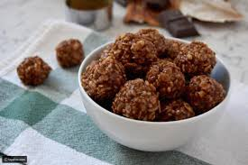

المكونات
6حبات مارس
60 غرام زبده
كوبان رايس كرسبي
الخطوات
فوق حمام مائي، أذيبي المارس
اضيفي الزبدة للمارس حتى تذوب وتمتزج
اضيفي الرايس كريسبي و شكّلي المزيج حين يبرد قليلاً لكرات
اتركيه في الثلاجة حتى يتجمد تماماً
الرجوع للصفحه السابقه